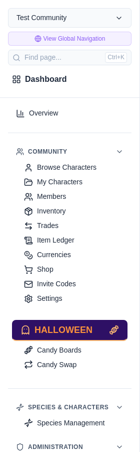
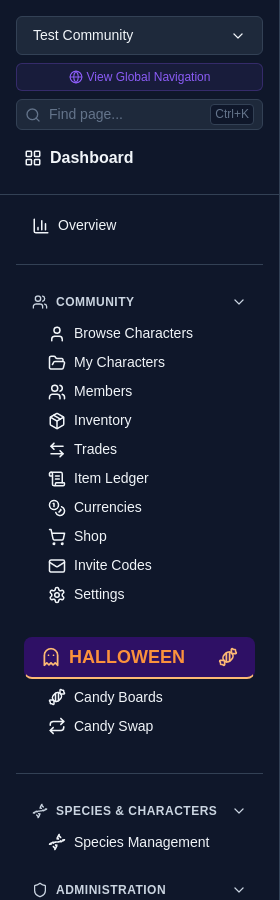
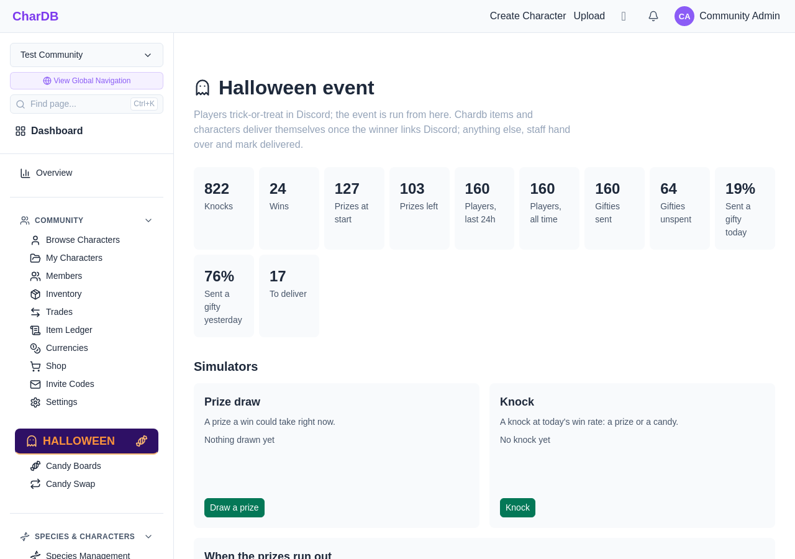
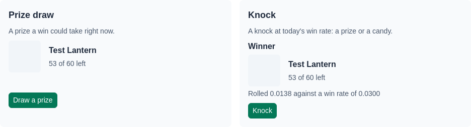
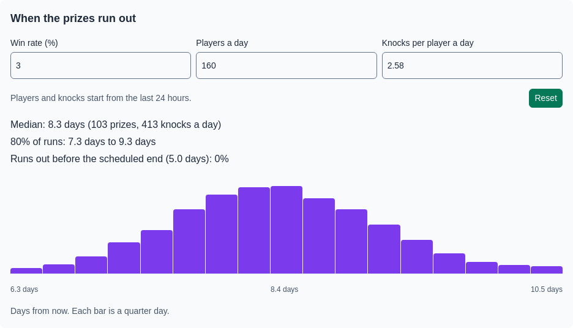
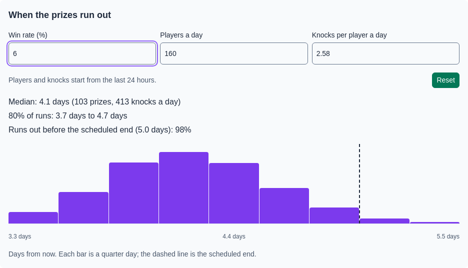
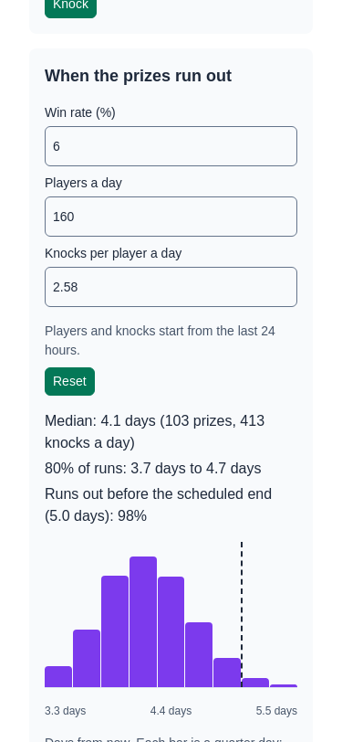

How the event is going, and when the prizes run out.
The Halloween event page opens with the event's numbers, then two simulators and a forecast. Staff use them to decide whether to raise the win rate as the week goes on.
Everything here is read-only. The simulators roll in your browser and never take a prize or spend a knock.
While the event is on, the community sidebar has a Halloween section for players, with Candy Boards and Candy Swap.
Staff who can grant or manage items also get Halloween Event under Administration, which opens the event page.


| Tile | Counts |
|---|---|
| Prizes at start, Prizes left | Units across the whole pool, before and after wins |
| Players, last 24h | Discord users who knocked in the past 24 hours |
| Players, all time | Discord users who have knocked since the event began |
| Gifties unspent | Gifties waiting for their receiver's next knock |
| Sent a gifty today, yesterday | Share of the day's players who also sent a gifty. Days run from one daily reset to the next, US Central. |
Each gifty sent is one more knock for someone, so the send rate is what turns players into total knocks.

Draw a prize picks a prize the way a win does: from what is left, each unit counting its weight. Use it to sanity-check weights before players do.
Knock rolls against today's win rate. A win draws a prize; a loss shows the candy it would leave. The roll is shown, so you can see how close it came.
Both use the same code as /knock in Discord.

The forecast plays the rest of the event out thousands of times and charts how many days from now the last prize goes, in quarter-day bars. Under it:
It starts from the current win rate and the last 24 hours' players and knocks per player. Before anyone has knocked, it assumes 175 players a day. Days before the start date count no knocks.

Change any of the three numbers and the chart redraws. Nothing is saved: to change the real win rate, use Edit settings. Reset puts the measured numbers back.
Once the end date falls inside the chart, a dashed line marks it. Aim for most of the curve to sit just left of the line.
The forecast assumes the same knocks every day. A busy first day followed by a quieter week stretches the real finish out further than the chart shows.

